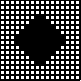

Las tramas PostScript u ordenadas
En las tramas ordenadas, lo que varía es el tamaño del punto de la trama (el "punto de semitono": halftone dot o halftone spot). Su tamaño variable define el porcentaje de la tinta. A mayor tamaño, los puntos ocupan más espacio y el efecto visual es el de que la tinta se oscurece (su porcentaje aumenta). Por eso se dice que su amplitud (la del punto) está modulada (amplitud modulada: AM). Las tramas digitales ordenadas son típicas del lenguaje PostScript y por ello la explicación se centra en ellas.
| Las dos imágenes de modelo sometidas a un tramado PostScript ordenado. El tamaño de los puntos varía (amplitud modulada), no varía la frecuencia y ordenación de su distribución. | |
Para poder construir un punto de tamaño variable, lo que se hace es agrupar los puntos de impresión en grupos de celdas.
Si queremos construir un punto de trama que sea capaz de representar 256 tonos diferentes de tinta, por ejemplo, necesitamos reunir los puntos de impresión en grupos de 16 × 16 puntos de impresión. A cada uno de esos grupos, le asignaremos un punto de trama, cuyo tamaño variaremos manchando más o menos puntos de impresión (es decir: Casillas).
| Estos son cuatro casillas con cuatro puntos de semitono de forma redonda. Observa como ocupa cada uno su cuadrícula de puntos de impresión de 16 × 16. | |||
|  | |||
| Un punto al 0%. ¡No hay nada! pero el espacio está reservado. | Un punto al 25%. Se ocupa una cuarta parte del espacio. Forma redonda. | Un punto al 75%. Se ocupan tres cuartas partes del espacio. | Un punto al 100%. Sólo hay negro. |
Si quieres ahondar un poco más en la formación del punto, te sugiero que leas esta página general (de Juan Val, en español) y esta más concreta sobre la función del punto (de Austin Donnelly, en inglés). Aparte, en este curioso PDF de Gernot Hoffmann, puedes ver una representación tridimensional de una función de punto.
Aparte del punto de semitono en si, los elementos básicos en las tramas ordenadas son, la forma del punto, los niveles de gris posibles, el ángulo de la trama, lineatura y (en el caso de más de un color), la roseta.